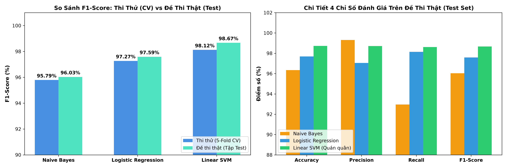
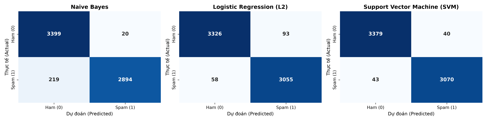
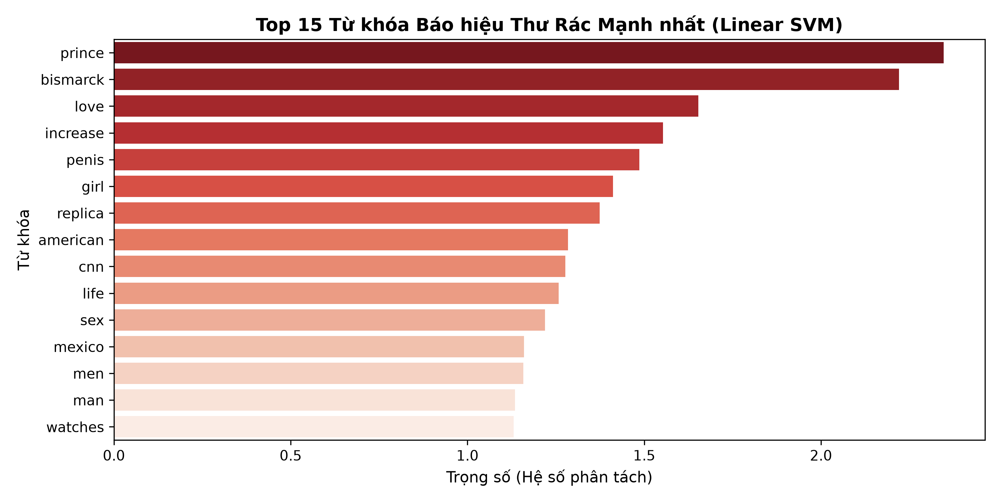

Bản chất toán học 3 thuật toán Scratch, kết quả 5-Fold Stratified CV, đánh giá độc lập Test set 6.532 mẫu, Ma trận nhầm lẫn và Top 15 từ khóa spam.
Cả 3 thuật toán phân loại đều được cài đặt từ đầu bằng Python và NumPy thuần túy, hỗ trợ trực tiếp ma trận thưa scipy.sparse chống tràn bộ nhớ RAM:
Đánh giá khách quan độ ổn định của 3 thuật toán trên 26.128 mẫu huấn luyện trước khi tinh chỉnh:
| Thuật toán (Scratch) | Accuracy (%) | Precision (%) | Recall (%) | F1-Score (%) |
|---|---|---|---|---|
| Multinomial Naive Bayes | 96.11 ± 0.17 | 98.90 ± 0.27 | 92.87 ± 0.36 | 95.79 ± 0.19 |
| Logistic Regression (L2) | 97.38 ± 0.23 | 96.56 ± 0.42 | 98.00 ± 0.30 | 97.27 ± 0.24 |
| Linear SVM (Hinge Loss) 🏆 | 98.20 ± 0.20 | 97.86 ± 0.39 | 98.39 ± 0.24 | 98.12 ± 0.21 |
Nhận xét: Phương sai của cả 3 mô hình đều cực thấp (±0.19% – 0.24%), chứng minh mô hình học bài rất vững vàng, không phụ thuộc vào cách chia fold.
Sau khi tinh chỉnh siêu tham số tối ưu qua GridSearchCV, 3 mô hình được thử sức trên 6.532 mẫu email hoàn toàn mới:
| Mô hình | Accuracy (%) | Precision (%) | Recall (%) | F1-Score (%) | Đánh giá tổng quan |
|---|---|---|---|---|---|
| Naive Bayes | 96.34% | 99.31% | 92.96% | 96.03% | Rất ít bắt nhầm nhưng bỏ sót nhiều rác |
| Logistic Regression (L2) | 97.69% | 97.05% | 98.14% | 97.59% | Cân bằng xuất sắc, tính xác suất mẫu mực |
| Linear SVM (Quán quân 🏆) | 98.73% | 98.71% | 98.62% | 98.67% | Toàn diện vượt trội, an toàn cao nhất |

Đánh giá rủi ro thực tế trên 6.532 mẫu email kiểm thử:

Trích xuất trọng số hình học coef_ từ mô hình Quán quân Linear SVM để phơi bày các từ khóa nghi vấn hàng đầu:

Bóc trần 3 nhóm lừa đảo phổ biến:
prince (hoàng tử Nigeria), bismarck, mexico, american.love, increase, penis, girl, sex, men.replica, watches (đồng hồ Rolex giả), cnn (giả mạo tin tức), life.Mô hình Linear SVM được chính thức chọn làm Quán quân đề tài. Hiện vật mô hình đã được đóng gói thành tệp siêu tinh gọn:
models/saved_models/best_model.joblib (Dung lượng: 307.462 Bytes ≈ 307 KB) kèm tệp chỉ số metadata.json, kết nối trực tiếp với Notebook Demo tương tác tại notebooks/demo.ipynb.